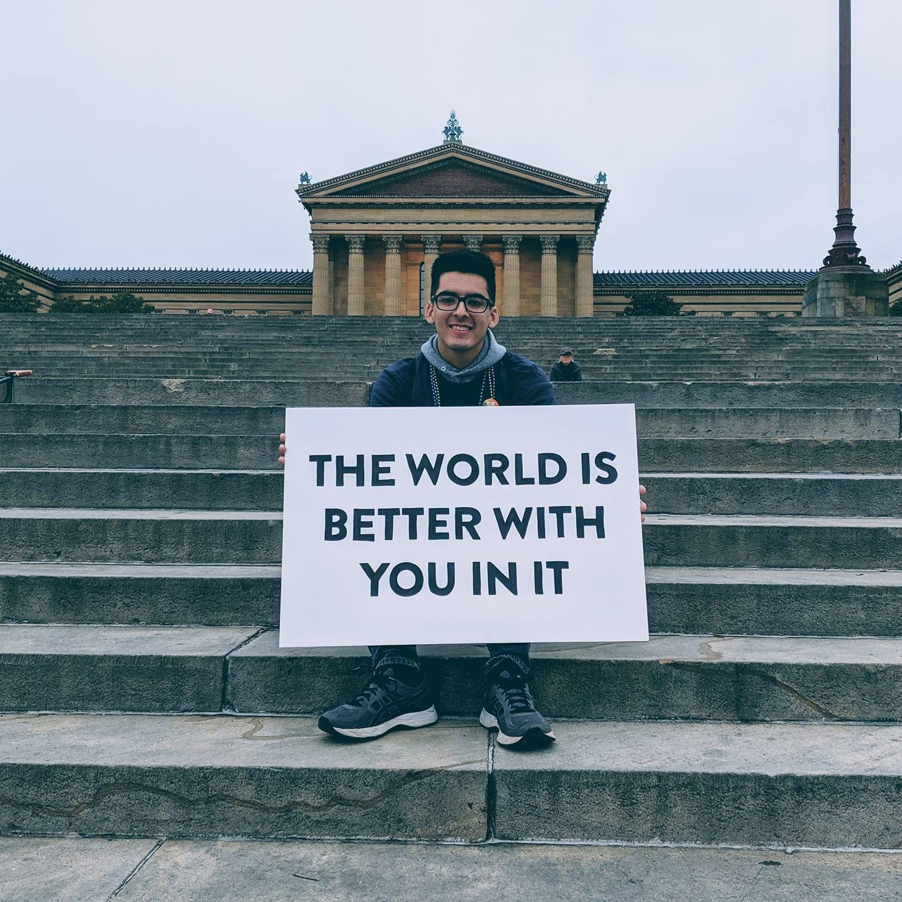

About Me
I’m an Eastern Pennsylvania-based practitioner of data, design, and dialogue. Currently, I serve as the Associate Director of Insights and Analytics at Temple University, working within the Department of Strategic Marketing and Communications.
In addition, I am the Managing Editor of Nightingale, the Journal of the Data Visualization Society. In this role, I oversee the digital publication, which reaches a monthly readership of 26,000, while contributing to the production of our print edition, currently shipping to 58 countries.
I hold a Master’s degree in Data Analytics and Visualization from the Maryland Institute College of Art, where I designed a museum exhibit featuring digitized journals by Virginia Woolf—made accessible for the first time as part of the project. I also hold degrees in Public Relations from Temple University and Communication Studies from Northampton Community College.
Previously, I have collaborated with a diverse range of organizations, including Nike, Microsoft, the Science History Institute, Philadelphia City Council, and Johnson & Johnson.
I have presented talks at the Centers for Disease Control and Prevention (CDC), the University of Massachusetts Amherst, the PRSSA MidAtlantic Conference, and TEDx.
My work has been recognized by PBS, the Data Visualization Society, Temple University, the Neau Marketing Awards, Axia Public Relations, and the Stabler Foundation
Overall, I am passionate about free knowledge, accessibility, and mental health advocacy.
If you would like to connect, you can find me on Bluesky and LinkedIn. You can also reach me via email.
On the steps of the Philadelphia Museum of Art, attending the 2019 AFSP Out of the Darkness Walk.
About this site
This site was coded by me and hosted on a Github repository. Previous iternations of this site existed on WIX, Webflow, and Cargo.
The typeface is Mule, designed by Samira Schneuwly. The background color is White (#FFFFFF), the typeface color is Zeus (#2C251D) and the hyperlink color is Flint (#736B63).